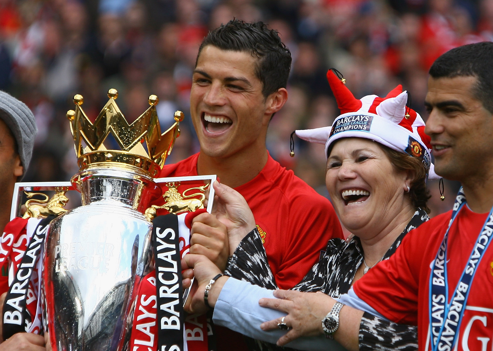
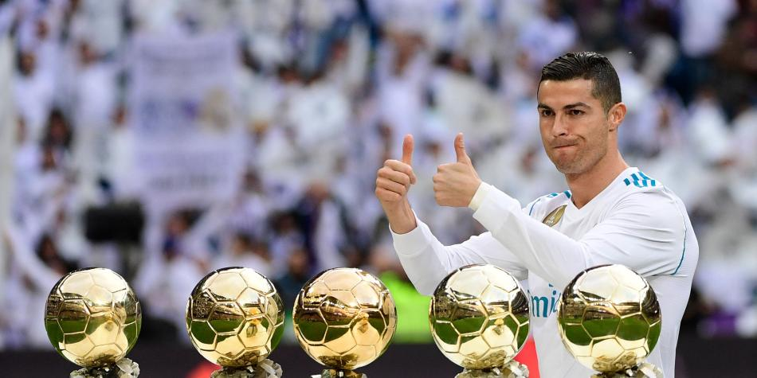
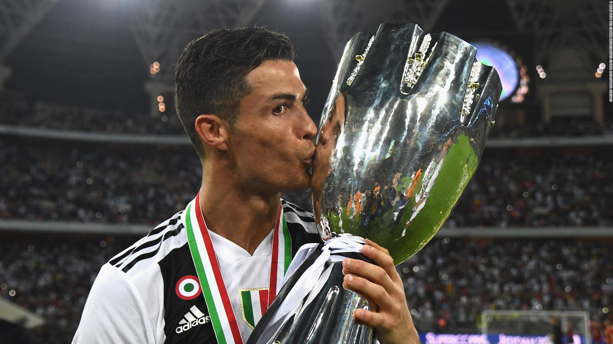
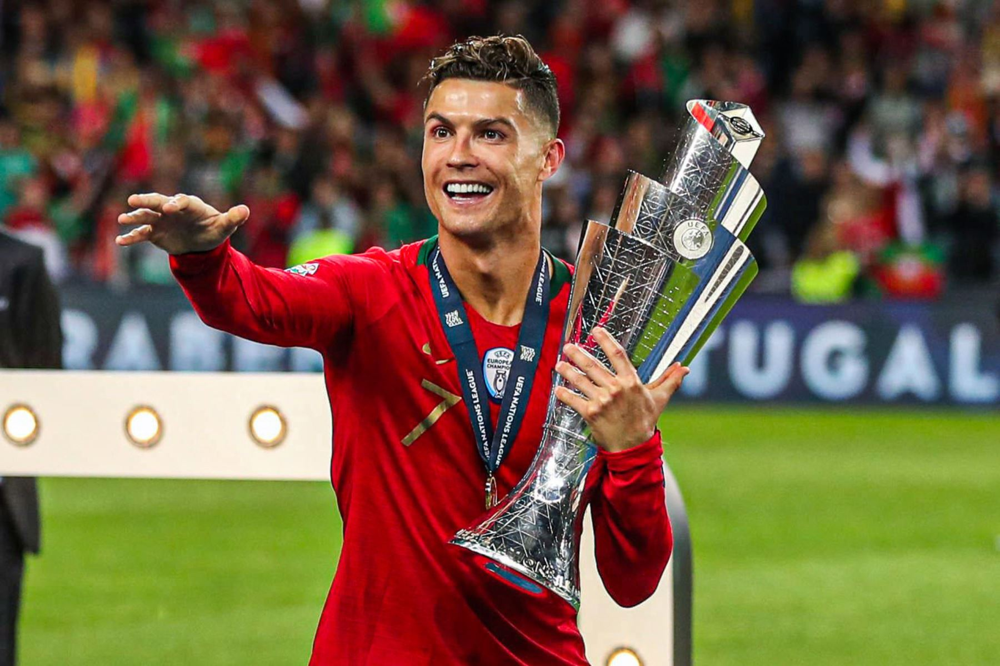
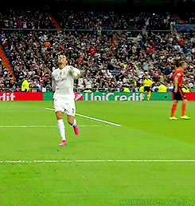

| Manchester United | |
|
1. Premier League: 2006–07, 2007–08, 2008–09 2. FA Cup: 2003–04 3. Football League Cup: 2005–06, 2008–09 4. FA Community Shield: 2007 5. UEFA Champions League: 2007–08 6. FIFA Club World Cup: 2008 |
 |
| Real Madrid | |
|
1. La Liga: 2011–12, 2016–17 2. Copa del Rey: 2010–11, 2013–14 3. Supercopa de España: 2012, 2017 4. UEFA Champions League: 2013–14, 2015–16, 2016–17, 2017–18 5. UEFA Super Cup: 2014, 2017 6. FIFA Club World Cup: 2014, 2016, 2017 |
 |
| Juventus | |
|
1. Serie A: 2018–19, 2019–20 2. Coppa Italia: 2020–21 3. Supercoppa Italiana: 2018, 2020 |
 |
| Selección de Portugal | |
|
1. UEFA European Championship: 2016 2. UEFA Nations League: 2018–19 |
 |
| Celebrando los Logros |
|  |